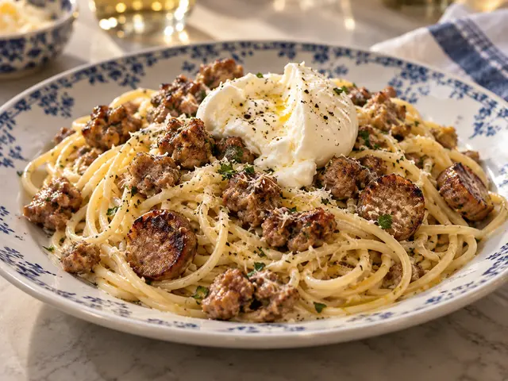
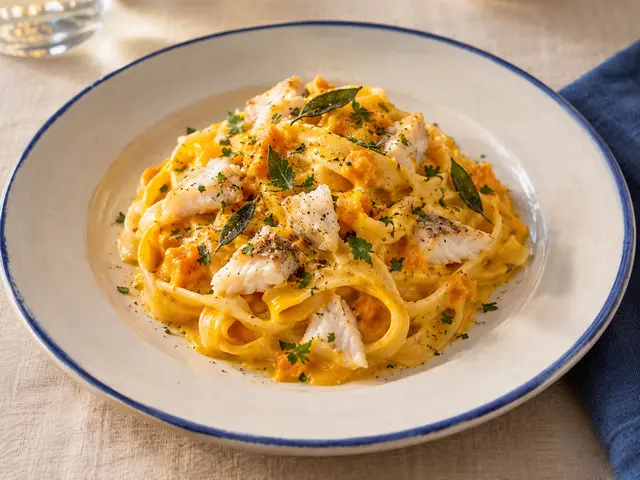
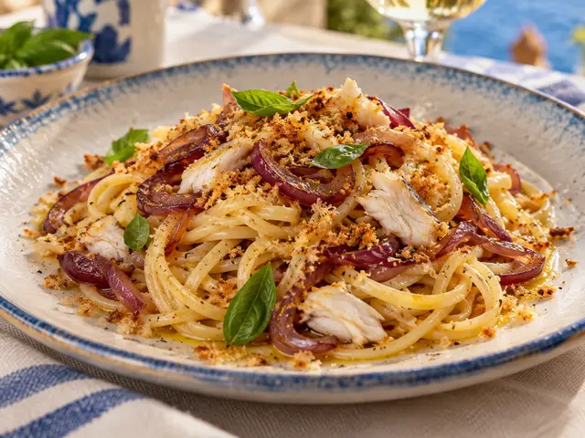
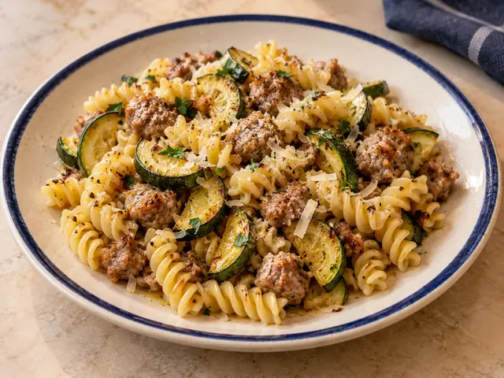
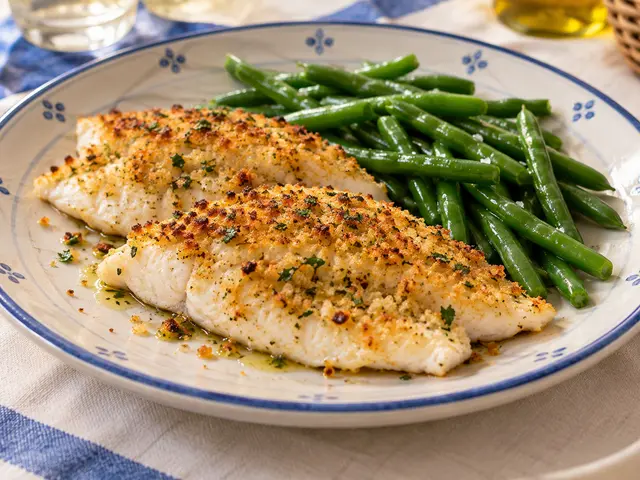
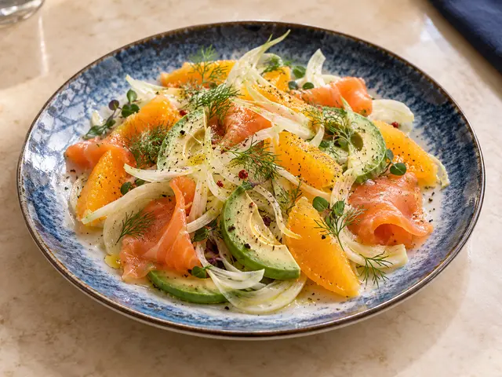
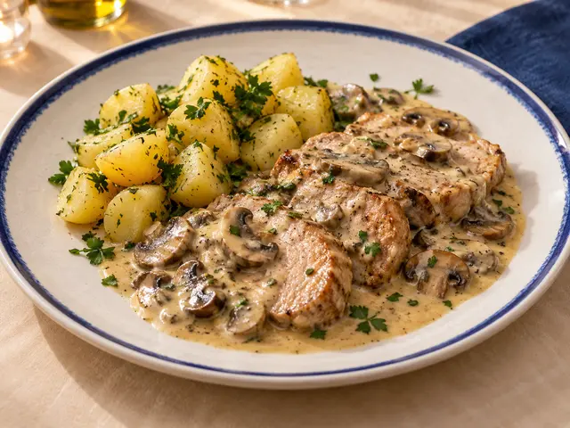
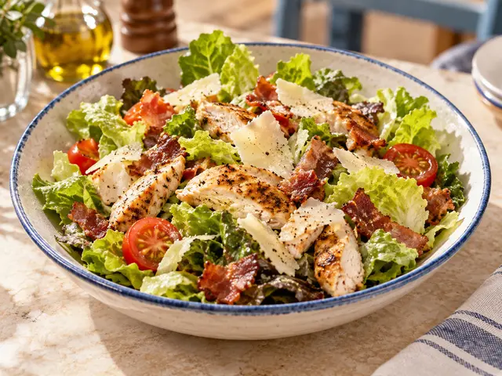

Spaghetti salsiccia e zafferano

Poca panna
🌾 01 · 🥛 07
Valido solo per pranzo
Controcorrente · Cucina italiana e di mare

Poca panna
🌾 01 · 🥛 07

🌾 01 · 🥛 07

Poca panna
🌾 01 · 🦐 02 · 🥛 07 · 🌰 08

🌾 01 · 🐟 04

🐟 04

🐟 04


Pollo, pancetta e scaglie di Grana
🥛 07
Prenotazioni entro le 12 · Attendere la conferma del Ristorante per considerare valido l’ordine · Acqua, caffè e coperto inclusi · Fino a esaurimento